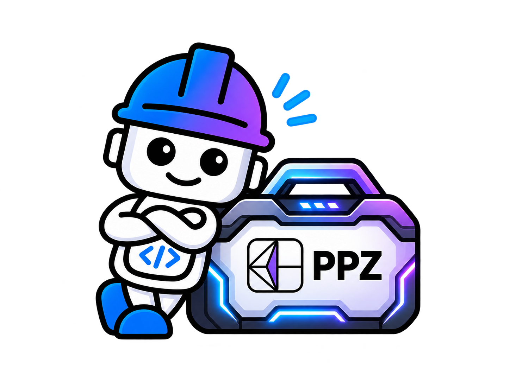
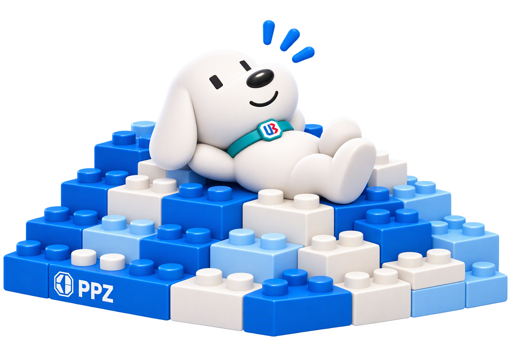
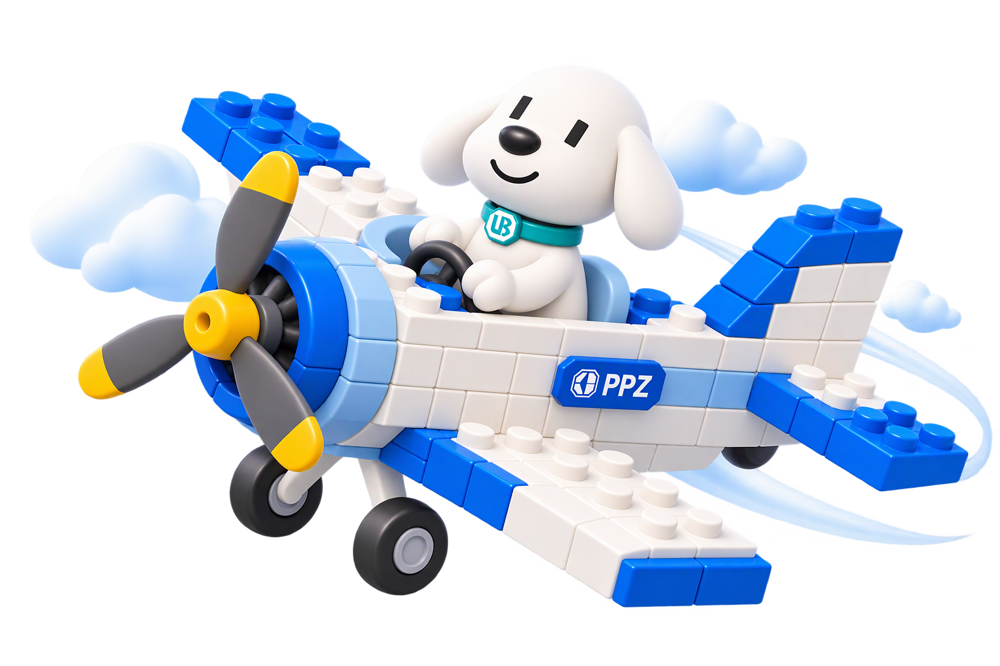

01 / IBM BOB + PREMIUM PACKAGE FOR Z ／ STRATEGIC VALUE
銀行需要的，不只是會寫程式的 AI。
而是看得懂主機變更脈絡的能力。
THE STRATEGIC SHIFT
讓專家經驗，
擁有更完整的
分析視野。
系統化追查交給 Bob + PPZ；關鍵判斷、程式審閱與主機驗證，仍由銀行團隊掌握。

BOB + PREMIUM PACKAGE FOR Z
02 / RUNBOOK F → M
從 CR（會辦單）到主機測試，
是一條有順序、有把關的流程。
Runbook 步驟 F → M：完成一個階段，才進入下一個階段；核准、審閱與主機測試由人負責。
1資產與相依性
2程式理解文件
3影響分析
4修改與驗證交接
H
資料字典欄位轉成業務語意PPZ ＋ BIZ 簽核I
流程分析與文件程式邏輯與業務規則PPZ ＋ DEV 核對J
影響分析列出牽動的程式與風險PPZ ＋ 人工回答
Bob／PPZ 協助分析人工把關
03 / POC EVIDENCE
從一張 CR、凌亂的程式碼，
到工程師可以審閱的工作成果。
聯邦銀行實際案例｜MICR 二次扣帳批次時點調整：輸入並不完美，分析仍可依照既定步驟推進。
04 / A CAPABILITY WORTH OWNING ／ OPERATIONAL FUTURE
讓每一次主機變更，
都有可以重複使用的分析起點。
分析產出交由專家審閱，保留既有治理與測試責任。
THE LONG-TERM OPPORTUNITY
不是每次都
重複摸索。
從既有 PPZ Workflow
直接開始。
05 / A CONCRETE EXAMPLE
工作成果長這樣：
從欄位語意，到疑似漏改。
CR 列了 2 支程式；分析沿著時點流向，另外找出 1 支疑似漏改，並提出 1 行建議修改。
DL-02 ｜ 資料字典共 30 筆欄位
欄位業務語意
START-TIME排程啟動時間
WK-M019-ACCM019 查詢工作帳號
CKOB-OBQ1-CNT第一出埠佇列處理筆數
COMM-BCNT-CLOSE分行櫃檯結帳關閉旗標
NPMICR-TXN-TIME交易工作區時間戳記
DL-04 ｜ 影響分析時點如何在程式間流動14:30 → 14:00
DL-06 ｜ 建議修改UCPCKOB.cbl
474−AND NPMICR-TXN-TIME (1:4) NOT < 1430
474+AND NPMICR-TXN-TIME (1:4) NOT < 1400
06 / EXECUTIVE CONFIDENCE · DECISION LENS
讓變革更有底氣，
讓治理更有依據。
A MORE CONFIDENT DECISION
不只看到效率。
更看見風險、
責任與長期價值。
07 / IBM BOB + PREMIUM PACKAGE FOR Z ／ THE NEXT CHAPTER
Change with confidence.

Build what’s next.
